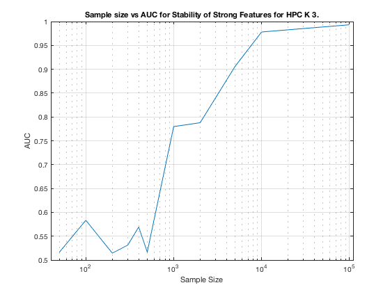

TIE-Net-Weak1. Summary. GLL.
summary_stability_type("MltNet", 1)
TOTAL COUNTS: Total=1327, Strong=23, Weak=1300, Irrelevant=4
Figure 73. Stability as a predictor for Strong Features for GLL on TIE-Net-Weak1.
__________________________________________________________________________________

Table 73. Breakdown of Stability by Feature Type for GLL.
__________________________________________________________
(1) Number Features Repeat (n_fs_rep): number of unique features that were selected in a repeat
(2) Number Features Fold (n_fs_fold): number of unique features that were selected in a fold
(3) Feature Stability ~ Feature Selection Frequency
Sample_Size All_n_fs_rep All_n_fs_fold All_Stability
___________ _____________________ _____________________ ___________________
' 50 ' ' 5.060 +/- 0.034 ' ' 1.410 +/- 0.008 ' ' 0.001 +/- 0.011 '
' 100 ' ' 5.540 +/- 0.045 ' ' 1.586 +/- 0.010 ' ' 0.001 +/- 0.012 '
' 200 ' ' 5.680 +/- 0.042 ' ' 1.620 +/- 0.010 ' ' 0.001 +/- 0.015 '
' 300 ' ' 5.720 +/- 0.041 ' ' 1.692 +/- 0.010 ' ' 0.001 +/- 0.017 '
' 400 ' ' 7.520 +/- 0.041 ' ' 2.154 +/- 0.011 ' ' 0.002 +/- 0.018 '
' 500 ' ' 7.100 +/- 0.052 ' ' 2.040 +/- 0.011 ' ' 0.002 +/- 0.019 '
' 1000 ' ' 8.620 +/- 0.055 ' ' 2.406 +/- 0.013 ' ' 0.002 +/- 0.020 '
' 2000 ' ' 10.380 +/- 0.051 ' ' 3.032 +/- 0.013 ' ' 0.002 +/- 0.024 '
' 5000 ' ' 13.660 +/- 0.045 ' ' 3.936 +/- 0.011 ' ' 0.003 +/- 0.028 '
' 10000 ' ' 16.620 +/- 0.052 ' ' 4.552 +/- 0.010 ' ' 0.003 +/- 0.031 '
' 100000 ' ' 19.060 +/- 0.037 ' ' 5.274 +/- 0.007 ' ' 0.004 +/- 0.034 '
Sample_Size Strong_n_fs_rep Strong_n_fs_fold Strong_Stability
___________ _____________________ _____________________ ___________________
' 50 ' ' 3.300 +/- 0.032 ' ' 0.892 +/- 0.007 ' ' 0.039 +/- 0.067 '
' 100 ' ' 3.700 +/- 0.038 ' ' 1.068 +/- 0.007 ' ' 0.046 +/- 0.078 '
' 200 ' ' 4.020 +/- 0.033 ' ' 1.140 +/- 0.005 ' ' 0.050 +/- 0.100 '
' 300 ' ' 4.260 +/- 0.038 ' ' 1.248 +/- 0.007 ' ' 0.054 +/- 0.117 '
' 400 ' ' 5.300 +/- 0.040 ' ' 1.476 +/- 0.008 ' ' 0.064 +/- 0.122 '
' 500 ' ' 5.240 +/- 0.048 ' ' 1.522 +/- 0.010 ' ' 0.066 +/- 0.126 '
' 1000 ' ' 6.960 +/- 0.046 ' ' 1.934 +/- 0.011 ' ' 0.084 +/- 0.131 '
' 2000 ' ' 8.380 +/- 0.042 ' ' 2.432 +/- 0.009 ' ' 0.106 +/- 0.147 '
' 5000 ' ' 11.540 +/- 0.042 ' ' 3.264 +/- 0.009 ' ' 0.142 +/- 0.158 '
' 10000 ' ' 14.840 +/- 0.048 ' ' 4.090 +/- 0.009 ' ' 0.178 +/- 0.157 '
' 100000 ' ' 17.700 +/- 0.028 ' ' 4.910 +/- 0.005 ' ' 0.213 +/- 0.151 '
Sample_Size Weak_n_fs_rep Weak_n_fs_fold Weak_Stability
___________ ___________________ ___________________ ___________________
' 50 ' ' 1.440 +/- 0.023 ' ' 0.442 +/- 0.010 ' ' 0.000 +/- 0.003 '
' 100 ' ' 1.660 +/- 0.023 ' ' 0.460 +/- 0.008 ' ' 0.000 +/- 0.003 '
' 200 ' ' 1.340 +/- 0.027 ' ' 0.388 +/- 0.009 ' ' 0.000 +/- 0.003 '
' 300 ' ' 1.160 +/- 0.024 ' ' 0.338 +/- 0.009 ' ' 0.000 +/- 0.002 '
' 400 ' ' 1.960 +/- 0.026 ' ' 0.588 +/- 0.009 ' ' 0.000 +/- 0.004 '
' 500 ' ' 1.660 +/- 0.024 ' ' 0.446 +/- 0.007 ' ' 0.000 +/- 0.003 '
' 1000 ' ' 1.480 +/- 0.029 ' ' 0.426 +/- 0.009 ' ' 0.000 +/- 0.003 '
' 2000 ' ' 1.700 +/- 0.024 ' ' 0.526 +/- 0.010 ' ' 0.000 +/- 0.004 '
' 5000 ' ' 2.000 +/- 0.028 ' ' 0.622 +/- 0.011 ' ' 0.000 +/- 0.004 '
' 10000 ' ' 1.680 +/- 0.028 ' ' 0.430 +/- 0.009 ' ' 0.000 +/- 0.004 '
' 100000 ' ' 1.220 +/- 0.027 ' ' 0.318 +/- 0.009 ' ' 0.000 +/- 0.003 '
Sample_Size Irrelevant_n_fs_rep Irrelevant_n_fs_fold Irrelevant_Stability
___________ ___________________ ____________________ ____________________
' 50 ' ' 0.320 +/- 0.012 ' ' 0.076 +/- 0.004 ' ' 0.019 +/- 0.011 '
' 100 ' ' 0.180 +/- 0.009 ' ' 0.058 +/- 0.004 ' ' 0.015 +/- 0.008 '
' 200 ' ' 0.320 +/- 0.012 ' ' 0.092 +/- 0.005 ' ' 0.023 +/- 0.007 '
' 300 ' ' 0.300 +/- 0.010 ' ' 0.106 +/- 0.005 ' ' 0.027 +/- 0.028 '
' 400 ' ' 0.260 +/- 0.011 ' ' 0.090 +/- 0.005 ' ' 0.023 +/- 0.017 '
' 500 ' ' 0.200 +/- 0.010 ' ' 0.072 +/- 0.004 ' ' 0.018 +/- 0.006 '
' 1000 ' ' 0.180 +/- 0.009 ' ' 0.046 +/- 0.005 ' ' 0.012 +/- 0.012 '
' 2000 ' ' 0.300 +/- 0.011 ' ' 0.074 +/- 0.003 ' ' 0.019 +/- 0.011 '
' 5000 ' ' 0.120 +/- 0.007 ' ' 0.050 +/- 0.004 ' ' 0.013 +/- 0.012 '
' 10000 ' ' 0.100 +/- 0.006 ' ' 0.032 +/- 0.003 ' ' 0.008 +/- 0.015 '
' 100000 ' ' 0.140 +/- 0.007 ' ' 0.046 +/- 0.003 ' ' 0.011 +/- 0.011 '